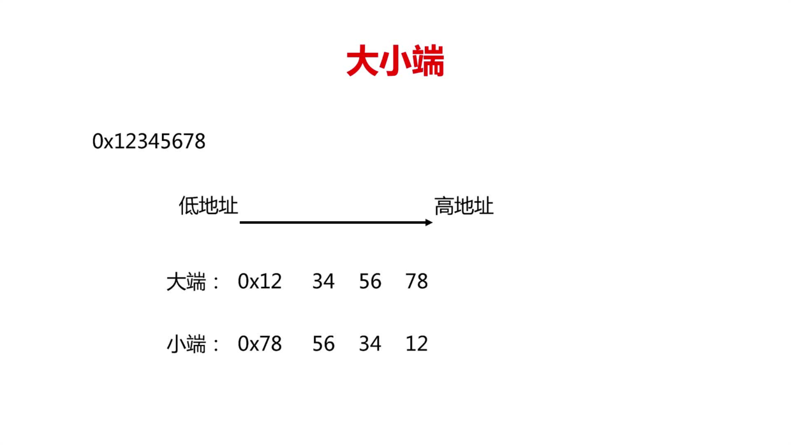

原文连接:https://www.cnblogs.com/dashucoding/p/10741594.html
php能做什么，它是运行在服务器端的，web网站大部分数据都是存储在服务器上的，PHP就是用来处理这些存储在服务器的数据。跨平台，服务器可以是多种平台上的服务器，脚本语言，免费。
wampserver集成环境开发包：
windows
apache
mysql
php
修改端口apache,httpd.conf
<?php
$var_name = "苹果";
$n =10;
var_dump($var_name);
var_dump($n);
?>变量名区分大小写
通过使用“memory_get_usage”获取当前PHP消耗的内存
<?php
$man = "男";
$flag = $man == "男";
echo $flag ;
echo "<br />" ;
var_dump($flag);
?><?php
$file=fopen("f.txt","r"); //打开文件
$con=mysql_connect("localhost","root","root"); //连接数据库
$img=imagecreate(100,100);//图形画布
?>系统常量：
__FILE__ :php程序文件名
__LINE__ :PHP程序文件行数
PHP_VERSION:当前解析器的版本号
PHP_OS：当前PHP版本的操作系统名称PHP中提供了一个错误控制运算符“@”
<?php
foreach (数组 as 值){
//执行的任务
}
?>
<?php
foreach (数组 as 下标 => 值){
//执行的任务
}
?>提示助手：
alt+/跳转末尾：
end全局搜索:
ctrl+h查看快捷键
ctrl+shift+l上传到服务器
svn插件
php函数
$arr_num = array(2,3,7,12,4);
$max_value = $arr_num[0];
foreach ($arr_num as $num) {
if($max_value < $num){
$max_value = $num;
}
}
echo $max_value;函数结构：
构建函数：
function get_sum($a,$b){
return $a+$b;
}调用函数：
$sum = get_sum(3,4);函数构成部分：
关键字：function
函数名，参数列表，函数体，返回体 return
函数名以字母或下划线开头。
函数的形参，默认值，强类型参数，可变数量的参数列表，值传递和引用传递，实参，变量的作用域，static静态变量。
func_num_args()
func_get_arg()
func_get_args()函数值传递与引用传递
传递类型：数值，对象，字符串，数组：
值传递：
function sum($a, $b){
return $a+$b;
}
引用传递：
function swap(&$a, &$b){
$tmp = $a;
$a = $b;
$b = $tmp;
}函数变量作用域
局部变量，全局变量global，静态变量static
function test(){
static $a = 0;
echo $a++;
}
test(); // 0
test(); // 1可变函数
echo(), print(), unset(), isset(), empty(), include(), require()$f = 'get_add'; echo $f();include引入一个不存在的文件只会报出一个警告，程序继续执行，而require引入一个不能存在的文件会导致一个致命的错误，程序结束运行，include_once和require_once在引入之前会进行检查，如果已经引入了就不会再进行引入，就是说保证只引入一次，避免重复引入
require('func.php');//致命错误立即停止
require_once()
include('function.php');//只是抛出警告信息,不终止程序
set_include_path('引入文件名')；
path_separator 路径分解符
restore_include_path() 取消路径
引入include路径
set_inlude_path('路径');，引入同一路径下的多个文件时，这个函数可以统一写入路径。
导入文件目录下的所有文件：
set_include_path(get_include_path().PATH_SEPARATOP.'testa');
set_include_path(get_include_path().PATH_SEPARATOP.'testa');
include('test1.php');
include('test2.php');导入testa文件下所有的文件
ini_set('include_path',get_include_path().PATH_SEPARATOP.'testa');闭包：
function test($name, Closure $clo){
echo "hello,{$name}\n";
$clo();
}
test("da",function(){
echo "dashucoding";
});
hello,dashucoding闭包的两种参数方式:
<?php
$message="hello"
$example = function($name) use($message){
echo $message,",",$name;
};
$message = "hi";
$example("da");
// hi,da闭包参数：
<?php
$message = "hello";
$example = function() use(&message){
echo $message;
};
$message="hi";
$example();
// hi闭包匿名函数的说明，匿名函数也叫闭包函数，允许临时创建一个没有指定名称的函数，常用作回调函数参数的值。
闭包函数，使用use（）传递变量，值传递和引用传递都可使用。Closure 匿名函数（闭包）
递归函数
定义：
函数在它的函数体内调用它自身，这种函数称为递归函数
作用：
分解问题，调用自身
$GLOBALS使用示例：
$v1 =1;
$v2 = 2;
function test(){
$GLOBALS['v2'] = &$GLOBALS['v1'];
}
test();
echo $v2; // 1静态变量在当前作用域下不会失效，用于多次访问保存某个数据的值，但是注意静态变量的值一定不能为函数或者其他东西，他必须是一个确定的值
引用全局变
1 global variable
2 GLOBALS[""]
第一种方法不操作原始变量
第二张会操作原始变量
- 值传递不带&号，不能通过函数改变原来的值，因为是不同的内存空间，参数传递带&号，可以通过函数改变他的值，引用的是同一个内存空间
- 在函数中可以通过$global 来引用函数外的值，不过是开辟新的内存空间存储
declare(strict_types=1);表名该php页面传递的实参如果与形参类型不一致，会出现致命性错误
强类型转换，实参与形参类型不一致，会出现致命性错误
1.PHP7的新特性
2.PHP7与PHP5的区别
3.PHP7基本变量
4.PHP7基本变量的存储与使用
结构体内存 8字节对齐，联合体复用内存
char a 1
int b 4
long 8
viod* 8
int e 4
char* f 8union_u{...}
这里是联合体 联合体的大小为8字节 内容和结构体一样
但是不同之处它的变量是复用的 反复在这8字节存储
stuct_s{ //这里是结构体 结构体的总大小是40字节
在内存里是按字节对齐存放的 且小于4字节 的以4个字节的位置放置 单行大小为8字节对齐 整体结构体以8个字节对齐
char a; //1字节
int b;//4字节
long c;//8字节
结构体是消耗内存的。
a占了1个字节，会空出3个字节。然后b占4个字节。

判断大小端的demo

日期时间函数库
设置时区：date.timezone
通过date_default_timezone_set()动态设置时区
通过ini_set()动态设置时区
header('content-type:text/html;charset=utf-8');
echo date_default_timezone_get();
date_default_timezone_set('Asia/Shanghai');
echo ini_get('date.timezone');
int_set('date.timezone','Asia/Shanghai');if($year%4==0 && ($year%100!=0 || $year%400==0)){
echo '是闰年';
}else{
echo "不是闰年";
}
date('L')?'是闰年'：‘不是闰年’;strtotime
strtotime将任何英文文本的日期时间描述解析为unix时间戳。
int strtotime(string $time [, int $now = time() ])header('content-type:text/html;charset=utf-8');这个是头部的声明：content-type表示文档的类型，是text/html即，文本和网页形式。
charset=utf-8，表示文本编码格式，即utf-8编码。
h5中的新增日期时间相关控件：
<form action="dashu.php' method="post">
<input type="date" name="datetime" id=""/><br>
<input type="datetime-local" name="datetime" id=""/><br>
</form>日期控件插件：jquery datetimepicker插件
jquery timer plugin 插件的使用

结言
好了，欢迎在留言区留言，与大家分享你的经验和心得。
感谢你学习今天的内容，如果你觉得这篇文章对你有帮助的话，也欢迎把它分享给更多的朋友，感谢。
感谢！承蒙关照！您真诚的赞赏是我前进的最大动力！